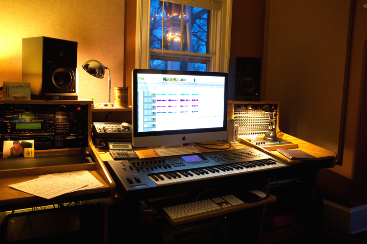

Domenic Cicchetti, has worked in the music industry for more than twenty five years as a performing musician, recording artist, composer, educational clinician, and musical instruments product specialist. After studying at Berklee College of Music, during which time he took private lessons with the famed piano teacher Madam Charloff, Domenic launched his recording career with the 1979 release of “Sunrise” on the Arista record label. He has a book published with Alfred Publishing entitled “Memories of Places and Times”, and his most recent recording “Open Road”, is a collection of original compositions he considers somewhat of an homage to such influential artists as Bill Evans, Chick Corea & Herbie Hancock.
Dom has worked with diverse performers such as Frank Sinatra, Ray Charles, Diana Ross, Charles Aznavour, Sammy Davis Jr., Liza Minnelli & Michael Feinstein – sharing the stage with these and other legendary stars in such world-renowned venues as Carnegie Hall, Radio City Music Hall, the London Palladium, Lincoln Center, the Kennedy Center and The White House. While he has performed and recorded primarily jazz and pop standards, Dom’s versatility and dedication to his craft have afforded him the opportunity to also tour and perform with a number of rock artists such as Meatloaf, Blood, Sweat and Tears, Jason Mraz, Jeff “Skunk” Baxter (Steely Dan, Doobie Brothers), and original members of the band Boston.
Dom’s TV and film projects include music production for NBC Sports, All My Children, Lifestyles of the Rich and Famous, and the popular Robert DeNiro film “A Bronx Tale”, where his piano work can be heard on “I Only Have Eyes for You”, accompanying the tenor sax playing of the late, great, Gerry Niewood.
